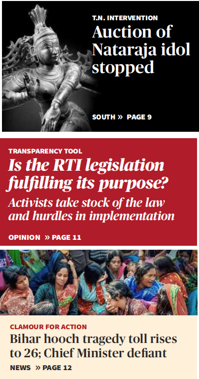
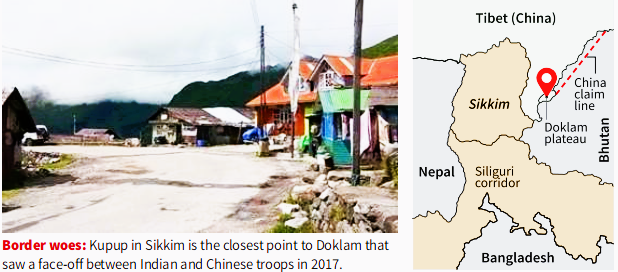

FRIDAY
December 16, 2022
CHENNAI CITY EDITION
28 Pages ₹ 5.00
THE
 HINDU
HINDU
FOLLOW US
facebook.com/thehindu twitter.com/the_hindu
instagram.com/the_hindu
Printed at » Chennai » Coimbatore » Bengaluru » Hyderabad » Madurai » Noida » Visakhapatnam » Thiruvananthapuram » Kochi » Vijayawada » Mangaluru » Tiruchirapalli » Kolkata » Hubballi » Mohali » Malappuram » Mumbai » Tirupati »

CHENNAI
CHENNAI
States can enact laws on uniform civil code: Rijiju
The Hindu Bureau DELHI
The States are empowered to enact personal laws that decide issues such as succession, marriage and divorce, in their endeavour to secure a uniform civil code (UCC), Law Minister Kiren Rijiju informed the Rajya Sabha on Thursday. The Minister made these remarks in a written reply to a question posed by Communist Party of India (Marxist) member John Brittas, asking whether the Centre was aware of the States formulating their own laws with respect to the uniform civil code. “Yes sir,” said Mr. Rijiju. “Article 44 of the Constitution provides that the State shall endeavour to secure for the citizens a uniform civil code throughout the territory of India.”
China builds ropeway, roads near tri-junction.
Beijing has been improving infrastructure and arranging additional deployments along the eastern sector of LAC; officials say there is lot of activity near Doklam that saw faceoff in 2017
Suhasini Haidar Dinakar Peri NEW DELHI
China has set up a ropeway near the Torsa Nala on its side of the IndiaBhutanChina trijunction, and is strengthening roads and other infrastructure along the entire eastern sector, according to defence sources. In the Yangtse area of Tawang sector in Arunachal Pradesh, which saw a scuffle last week, defence officials with knowledge of the area said China had stepped up patrols some years ago to assert its claims in the area, after finding that their grazers could not move in and out. “What irks the People’s Liberation Army (PLA) is that the Indian.

Army holds the dominating heights which give a complete view of the
bowl,” noted two of the sources.
Army holds the dominating heights which give a complete view of the
bowl,” noted two of the sources.
Yangtse ingress points The Chinese usually patrol two to three times
a year, before and after winter, one of the sources said, adding
that there are four major ingress points in the Yangtse area.
which the PLA uses to enter the region. Yangtse is located 30 35 km northeast of Tawang and is at an altitude of around 17,000 feet. The PLA has installed a ropeway close to the Torsa Nala on their side near the confluence point, and some new anchor points of the ropeway have been recently.
observed, said one of the sources cited above. Officials said that there is also a lot of activity near the Torsa Nala near Doklam, a location that saw a 73day standoff between Indian and Chinese forces in 2017.
NEARBY🔽
Space industrial parks to be set up in Thoothukudi
CHENNAI
Space industrial parks will be set up near the upcoming space port
at Kulasekarapattinam in Thoothukudi, Industries Minister Thangam
Thennarasu said.
Law and order is deteriorating, says Palaniswami
CHENNAI
AIADMK leader Edappadi K. Palaniswami said the law and order
situation in the State had deteriorated though Chief Minister M.K.
Stalin claimed that people were happy with his government.
Instructor held for asking student to visit home
The Hindu Bureau NAGAPATTINAM
A 38yearold instructor of a private nursing college in
Nagapattinam was arrested on
Wednesday after an audio clip, in which he repeatedly asks a female student to visit his house, was widely shared on social media platforms. In the clip, the girl is
heard pleading that she does not want to. At one point, the girl affirms that she is not interested and pleads with him to leave her alone. He then tells her to forget it if she
is not willing. Collector A. Arun Thamburaj directed District Social Welfare Officer A. Thameemmunisa to hold an inquiry.
join_left
join_left
join_left
join_left
join_left
join_left
join_left